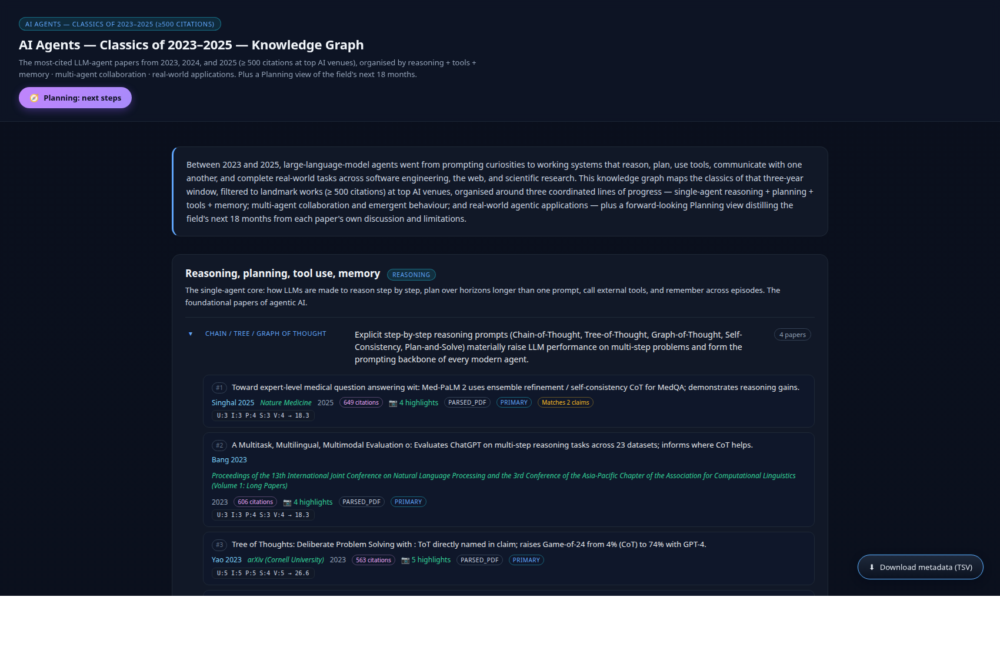

62Papers
9Claims
3Paradigms
61Evidence rows
249Paragraph PNGs
5Planning next-steps
40Future-work passages
2023–2025Year range
Between 2023 and 2025, LLM agents went from prompting curiosities to working systems that reason, plan, use tools, communicate with one another, and complete real-world tasks across software engineering, the web, and scientific research. This knowledge graph maps the classics of that three-year window, filtered to landmark works at top AI venues, organised around three coordinated lines of progress — single-agent reasoning + planning + tools + memory; multi-agent collaboration and emergent behaviour; and real-world agentic applications — plus a forward-looking Planning view distilling the field's next 18 months from each paper's own discussion and limitations.
Filter conditions
The corpus was deliberately scoped down to the field's most impactful 2023–2025 contributions:
Year ∈ {2023, 2024, 2025}
cited_by_count ≥ 500 (D1)
≥ 200 / 100 / 50 for 2023/2024/2025 backfill (D2 gap-fill)
Top AI venues: NeurIPS · ICML · ICLR · ACL · EMNLP · NAACL · AAAI · CVPR · IJCAI · CoRL · arXiv
Pre-2023 founders of the field (CoT / ReAct / Self-Consistency / Toolformer original) are deliberately excluded by the year filter. Where a 2022 paper has a 2023+ canonical version, the later version was captured.
The three paradigms
Reasoning, planning, tools, memory reasoning
The single-agent core: how LLMs are made to reason, plan, call external tools, and remember.
- Chain / Tree / Graph of Thought — Tree of Thoughts, Self-Consistency, Plan-and-Solve
- Tool use & function calling — Toolformer, HuggingGPT, Gorilla, ToolLLM
- Memory & reflection — Reflexion, Self-Refine, Self-Discover, MemGPT
Multi-agent collaboration multiagent
When several agents share a goal, debate a problem, or specialise into roles.
- Role & debate — CAMEL, AutoGen, MetaGPT, Multi-Agent Debate
- Autonomous loops — AutoGPT, OpenAgents, ChatDev, Voyager
- Emergent behaviour — Generative Agents, social-simulation agents
Real-world applications applications
Where agents started to ship.
- Software engineering — SWE-bench, SWE-agent, ChatDev, CodeAct, AgentCoder
- Web & embodied — VisualWebArena, Mind2Web, PaLM-E, RT-2, OpenVLA
- Scientific research — ChemCrow, Coscientist, autonomous laboratory
🧭 Planning: Next steps planning
Five research directions distilled from each paper's own discussion / future-work.
- Persistent autonomous agents
- Self-improving agents
- Verifiable and safe agents
- Multimodal embodied agents
- Scientific discovery agents
Preview

Evidence view — paradigm cards · ranked evidence rows · multi-screenshot modal stacks · 5-dim rubric breakdown · TSV download